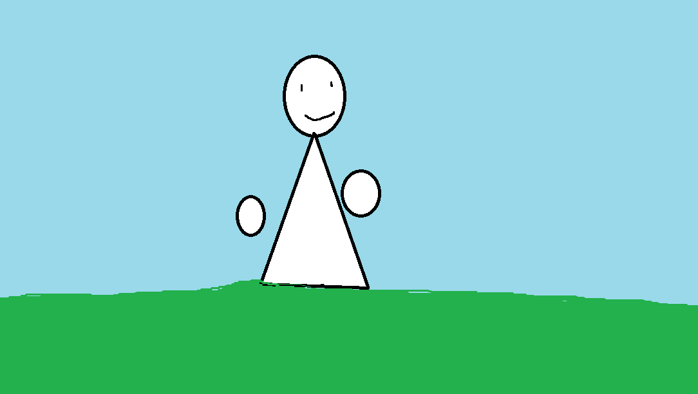

Бобік-це мій друг,що створив акаунт в тіктоці 😉 та набрав багато слідкувачів ,Зніміючи не найкрайщий контент йгого спаравщне імя:Фещин Любомир Володимирович, живе в селі Підгайчики Львівськой обл.🤠 в Україні .Хороший 💀позитивний хлопчина не зовсім добре вчится має багато друзів з різних куточків планети.
photo bobika 😆